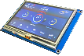

Nextion Scherm© 2018, ProtoIt Platform: RASPBERRY |  |
Beschrijving:
ProtoIt ondersteunt alleen Nextion enhanced schermen. Deze kunnen met de Nextion
editor-taal worden bestuurd via seriële communicatie. Vanuit ProtoIt kunnen er
pagina´s worden opgeroepen en de tekst, waardes of instellingen van schermelementen
worden gewijzigd. Omgekeerd kunnen er waardes vanaf de Nextion naar ProtoIt worden gestuurd
met de print-instructie. Let op! Voordat er een ´.val´-waarde
wordt verstuurd, moet er een print "#"-instructie worden gegeven en
nadat een ´.txt´-waarde is geprint, moet deze worden gevolgd door een
print "~"-instructie. Een programma zal blokkeren, wanneer het ´#´-
en ´~´-teken anders worden gebruikt.
Onderdelen:
Scherm
Op de programmategel:
| Zend waarde | Waarde die naar het Nextion- scherm moet worden verzonden. Dit kan een paginanummer, getal of tekst zijn. |
| Naar veld | Vul hier het schermelement van de actieve pagina in die de waarde moet ontvangen. (Laat leeg als er een pagina moet worden opgeroepen.) |
| Type veld | Sleep hier één van de constante signalen Tekst, Getal of Pagina naar toe. ProtoIt verstuurt dan respectievelijk de instructies [veld].txt="[waarde]" dan wel [veld].val=[waarde] dan wel page [waarde] naar de Nextion. |
| Staat klaar | Wordt uitgezonden wanneer het Nextion- scherm een waarde heeft verzonden. De waarde wordt via het onderstaande signaal uitgelezen. |
| Waarde | Bevat waarde die door de Nextion is verzonden. |